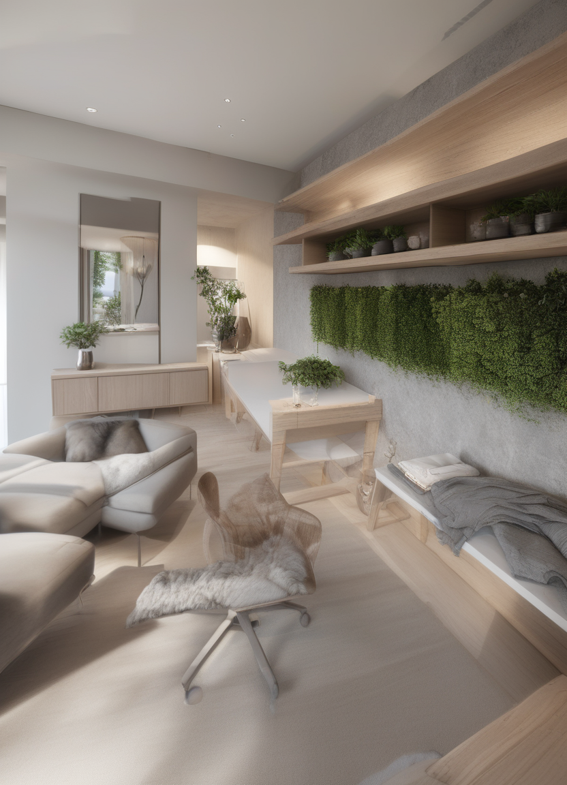

Transforming My Dorm Room with RoomAI: An AI Decor Experiment
Introduction
So, we all know that AI is everywhere these days. From chatbots to smart assistants, it’s kind of hard to avoid. But here’s something I didn’t expect: AI getting involved in interior design. Yep, you heard that right. There’s a tool called RoomAI that uses artificial intelligence to redesign and decorate rooms. Naturally, I was curious. What would happen if I gave this AI a picture of my dorm room and let it work its magic?
Long story short: I decided to give it a try and see how well this AI could transform my humble dorm into something more aesthetically pleasing. Spoiler alert: it was… okay. But before you go thinking that this was a total failure, let me break down what worked, what didn’t, and what I think could make it better.
The Experiment: Can AI Really Decorate My Dorm?
I started off by taking a picture of my dorm room. Now, I’m not saying it was a disaster, but let’s just say it wasn’t the most Instagram-worthy space. There’s a bed, a desk, a chair, and, you know, the usual dorm stuff—nothing too fancy. So, I uploaded the image to RoomAI and crossed my fingers.

The AI took this raw, messy room and was supposed to turn it into something stylish. After all, that’s what the tool promised, right? A sleek, digital redesign, complete with furniture placement, color coordination, and all the little details that make a space feel put together.
But when I saw the results, I wasn’t exactly blown away.
The AI’s Take on My Room
The design it generated was… interesting. The room looked more polished, but it didn’t quite capture the cozy vibe I was hoping for. The colors were a bit too stark, and the furniture felt oddly arranged. It looked more like a staged photo shoot than a lived-in space. I’m sure the AI was doing its best, but the end result didn’t exactly match my style.
Here’s the thing: I only provided one image. One. The AI had limited context, and let’s face it, it’s hard for a machine to truly get the essence of your space with so little input. This might be where things went a bit awry.

The Takeaway: RoomAI’s Potential (And Where It Missed the Mark)
Even though this experiment wasn’t a huge success, I can still see how RoomAI has potential—especially when given more context and customization. Here are a few things I learned throughout the process:
1. More Input Equals Better Output
The AI only had one picture of my room, which is like trying to solve a puzzle with just one piece. The more angles or pictures you provide, the better RoomAI can understand the layout, the lighting, and the overall vibe of your space. More data would definitely improve the outcome, but again, that’s something RoomAI still needs to work on.
2. Style Flexibility is Key
One of the biggest issues I ran into was the lack of style customization. I didn’t get to choose whether I wanted a minimalist, boho, or modern design. Instead, the AI just picked a general style that didn’t align with what I had in mind. Imagine if RoomAI had a section where you could pick your style and get suggestions based on that! It would make the tool way more personalized.
3. It’s Not Perfect—But It’s a Start
I’m not going to pretend that RoomAI got it right 100% of the time, but it’s clear that we’re getting closer to tools that can genuinely help us decorate our spaces with minimal effort. The AI-generated design was a good starting point, and with more iterations (and maybe a bit of user feedback), it could evolve into a much more useful tool for DIY decorators like me.
4. AI Needs More Iterations
Here’s the kicker: RoomAI didn’t offer multiple design options for me to choose from. I got one style, one layout, and that’s it. But what if there were more iterations? What if you could tell the AI, “Hey, show me 5 different layouts,” and get a variety of suggestions to choose from? That would be a game-changer. This would make the AI more versatile and give you a lot more creative freedom.
Conclusion: Can RoomAI Revolutionize My Room? (Not Yet, But Maybe Soon)
So, what’s the final verdict? My dorm room isn’t exactly a high-end, AI-designed masterpiece, but I can see the potential for RoomAI to be something bigger. Right now, it’s a cool tool to play around with, but it’s not quite ready to replace a professional interior designer (and let’s be honest, I didn’t expect it to).
Here’s what I’m hoping for in the future: - More Customization: Give us more control over the style and design elements. - Multiple Designs: Offer different layout and decor options to choose from. - Better Input Processing: More images, more angles, more context—this would lead to better results.
As for me? I’ll definitely keep experimenting with RoomAI. Maybe next time I’ll provide multiple photos and see if the results improve. Who knows? Maybe I’ll even share my journey with you all as I dive deeper into the world of AI-powered home decor. For now, I’ll stick with my partially AI-designed room and hope that future iterations of the tool get it just right.
What about you? Have you tried RoomAI or any other AI-powered design tools? What was your experience like? Let me know in the comments below!